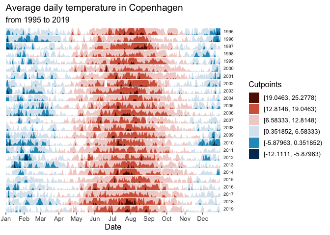

This package allows building horizon plots in ggplot2. You can learn more about the package in vignette("ggHoriPlot").
Installation
You can install ggHoriPlot from CRAN via:
install.packages("ggHoriPlot")You can also install the development version of the package from GitHub with the following command:
#install.packages("devtools")
devtools::install_github("rivasiker/ggHoriPlot")Basic example
Load the libraries:
Load the dataset and calculate the cutpoints and origin:
utils::data(climate_CPH)
cutpoints <- climate_CPH %>%
mutate(
outlier = between(
AvgTemperature,
quantile(AvgTemperature, 0.25, na.rm=T)-
1.5*IQR(AvgTemperature, na.rm=T),
quantile(AvgTemperature, 0.75, na.rm=T)+
1.5*IQR(AvgTemperature, na.rm=T))) %>%
filter(outlier)
ori <- sum(range(cutpoints$AvgTemperature))/2
sca <- seq(range(cutpoints$AvgTemperature)[1],
range(cutpoints$AvgTemperature)[2],
length.out = 7)[-4]
round(ori, 2) # The origin
#> [1] 6.58
round(sca, 2) # The horizon scale cutpoints
#> [1] -12.11 -5.88 0.35 12.81 19.05 25.28Build the horizon plots in ggplot2 using geom_horizon():
climate_CPH %>% ggplot() +
geom_horizon(aes(date_mine,
AvgTemperature,
fill = ..Cutpoints..),
origin = ori, horizonscale = sca) +
scale_fill_hcl(palette = 'RdBu', reverse = T) +
facet_grid(Year~.) +
theme_few() +
theme(
panel.spacing.y=unit(0, "lines"),
strip.text.y = element_text(size = 7, angle = 0, hjust = 0),
axis.text.y = element_blank(),
axis.title.y = element_blank(),
axis.ticks.y = element_blank(),
panel.border = element_blank()
) +
scale_x_date(expand=c(0,0),
date_breaks = "1 month",
date_labels = "%b") +
xlab('Date') +
ggtitle('Average daily temperature in Copenhagen',
'from 1995 to 2019')